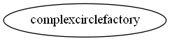

Master index
Index for manopt\manifolds\complexcircle
Dependency Graph for manopt\manifolds\complexcircle

Generated on Mon 10-Sep-2018 11:48:03 by
m2html
© 2005
 Master index
Master index Master index
Master index